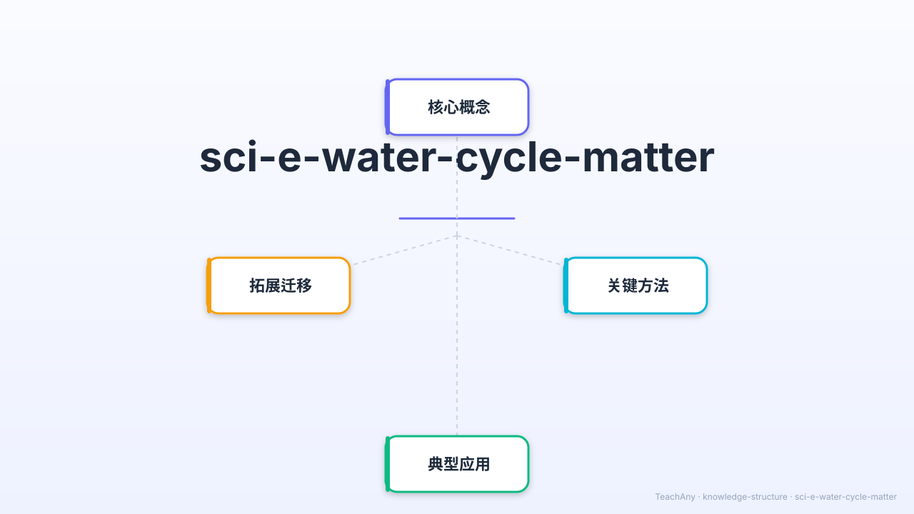
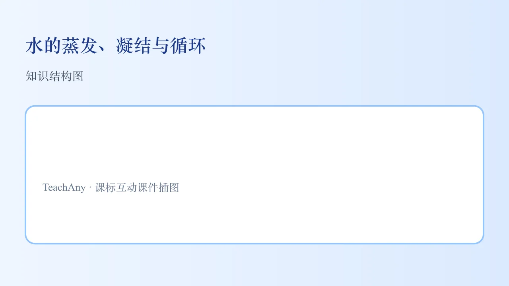

衣服晾干了——水去哪里了？冬天对玻璃哈气，玻璃上出现小水珠——这是为什么？
一起揭开水的神奇旅程：蒸发、凝结与水循环的秘密！

对应 2022 课标 · 小学科学 · 物质科学领域
说出蒸发的定义，知道哪些因素能加速蒸发，举出生活中的例子
描述凝结过程（水蒸气→液态水），说出凝结需要的条件和生活例子
能描述水循环的完整过程（蒸发→上升→云→降水→汇流→入海）
解释水循环对地球生命的重要意义，理解水资源的宝贵
用生活情境开始今天的探索
水能用来喝、洗东西；下雨的时候地上会积水，晴天后积水会消失。地球上有海洋、河流和云朵。
晾在外面的湿衣服为什么会变干？水去哪里了？冬天对着玻璃哈气，玻璃上出现的小水珠又是从哪里来的？天上的云是怎么形成的？
揭开水的三大变身秘密：蒸发（液→气）、凝结（气→液）、水循环（周而复始）！
5个场景 · 22秒 · 粒子动画展示蒸发过程，弧形箭头演示水循环全程
水分子获得足够能量，就能逃离液体，变成水蒸气
衣服里的水在阳光+风的作用下蒸发变成水蒸气散入空气，衣服就干了
雨后地上的小水洼，晴天时太阳照射，水慢慢蒸发，水洼就消失了
热饮料蒸发产生大量水蒸气，水蒸气遇到冷空气凝结成雾气（也涉及凝结！）
水蒸气遇到冷的表面，就会失去能量，重新变回液态水珠
杯子很冷，空气中的水蒸气碰到冷杯壁，凝结成水珠。这水不是从杯里漏出来的！
体内呼出的气体含有热水蒸气，遇到寒冷空气迅速凝结成极细小的水滴，肉眼看到的"白气"就是这些小水滴
冬天室内暖湿气体接触冷玻璃，水蒸气凝结在玻璃内侧形成雾气
夜间气温下降，空气中水蒸气在植物叶子等冷表面凝结，清晨形成晶莹的露珠
蒸发和凝结是水循环的两大发动机，地球水总量不变
点击"太阳""云""雨""河流"各阶段，查看详细说明 · 观察水分子的旅程
点击下方按钮或直接点击画布中的各元素，了解每个水循环阶段。
把下面的水循环阶段拖到正确顺序，然后点击"检查"
拖动各步骤，排出水循环的正确顺序（从蒸发开始）
点击选项作答，查看错因分析
把今天学到的装进记忆背包
液态水 → 水蒸气
温度高/风大/面积大 = 加速
水蒸气 → 液态水
遇冷表面发生，是蒸发的逆过程
蒸发→上升→云→降水
→汇流→入海→再蒸发
地球水总量不变
水循环是地球生命的生命线！
1. 你观察过水蒸发的过程吗？能描述一下吗？2. 为什么有时候玻璃上会出现水珠？
1. 简述水循环的主要过程。2. 举例说明人类活动如何影响水循环。
常见误区：学生可能认为水循环只是简单的水蒸发和降水过程，忽视了其中的能量转换和气候影响。错因分析：这种误解源于对水循环复杂性认识不足，只关注了表面现象。诊断建议：教学中应强调水循环的系统性和多面性，通过具体例子展示其与能量、气候等的联系。
迁移挑战：设计一个实验，探究不同地表覆盖（如草地、水泥地、沙地）对水循环中蒸发和渗透过程的影响。要求分析实验结果，并思考如何利用这些发现改善城市水资源管理。
先独立作答，再点选项查看对错与错因。
下列现象属于蒸发的是？
晾衣绳出现水珠是因为空气中的水蒸气发生了？
加快湿衣服变干的方法是？
水从液态变为气态的过程叫____，此过程需要____热量。
答案：蒸发/吸收
蒸发是吸热过程
清晨草地上的露水是空气中的____遇冷____形成的。
答案：水蒸气/液化
水蒸气降温变为液态水
关于水蒸气的正确说法是？
设计实验比较不同条件下水的蒸发快慢
❓ 为什么洗完澡镜子会起雾？
❓ 雨水是从云里'挤'出来的吗？
❓ 沙漠里的水蒸发得更快吗？
学完这一课，这些问题你都能自信地回答。
水分子获得能量挣脱液态→蒸发；失去能量聚集→凝结
太阳是水循环的发动机，重力让水回到地面
蒸发吸热如汗液降温，凝结放热如烧水壶盖发热
观察冰镇饮料瓶外的小水珠→空气中的水蒸气遇冷凝结
解释空调排水原理：室内热空气遇冷凝结成水
✅ 白雾是小水滴不是水蒸气
💡 混淆气态与液态水
✅ 冰也能缓慢升华蒸发
💡 忽视分子永不停息运动
口诀：吸热蒸发变气体，放热凝结回液态
类比：像一群跳舞的人，音乐劲爆就散开（蒸发），音乐舒缓就抱团（凝结）
湿衣服晾干属于什么现象？
水循环的正确顺序是？
（中考题）夏季午后雷阵雨成因是？
冰箱冷冻室结霜的原理是？
干旱地区建水库如何影响局部水循环？

And：学生见过湿衣服变干
But：但说不清水消失的原因
Therefore：理解蒸发是水循环第一步
蒸发是液态水吸热变成看不见的水蒸气的过程。比如：25℃时，一碗100ml的水放在窗台，3天后只剩60ml——那40ml水变成水蒸气跑到空气里了！温度越高（如夏天）、表面积越大（如摊开湿毛巾），蒸发越快。
🌍 夏天操场积水很快消失，就是蒸发：太阳给水加热，小水滴变成气体藏进空气中啦！
以下哪个加速蒸发？
And：学生知道水会变干
But：但不知道水其实变成看不见的气体
Therefore：理解蒸发是液态变气态的关键过程
蒸发是水从液态变成气态的过程，需要吸收热量。比如：25℃时，操场上的小水洼（约500ml）经过3小时阳光照射会完全消失——这些水没有‘消失’，而是变成水蒸气进入空气了。温度越高、表面积越大（如摊开湿毛巾），蒸发速度越快。
🌍 晾衣服时，湿衣服在晴天比阴天干得快，因为阳光提供了更多热量加速蒸发。如果衣服拧得紧（表面积小），甚至比摊开的衣服干得慢。
下列哪种情况蒸发最慢？